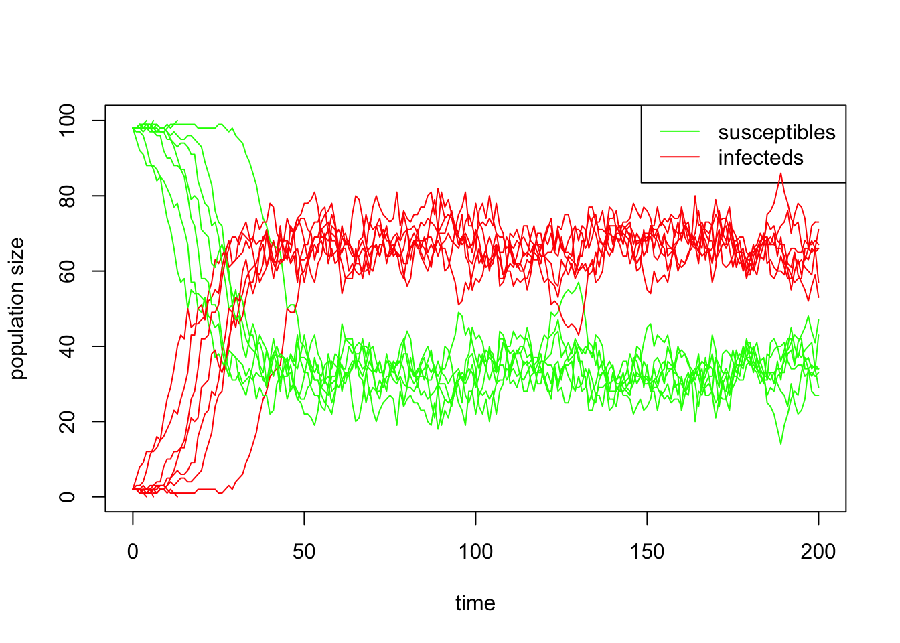

Practical 3-4: Stochastic SIS model
Overview
In this practical we develop and run our first stochastic version of the SIS model.
Background
We saw in the previous practicals the impact of including randomness into the exponential model with births and deaths. Having developed the programming framework, it is now time to investigate the impact of randomness in the simplest epidemiological model – the SIS model.
Tasks
In this practical we will write a stochastic version of the SIS model. You have been provided with run_simulation() in the RPiR package, which allows some extra functionality over run_simple() to run simulations using the older deterministic models. Pay attention in particular to writing the function, where the most important changes need to be made.
R/timestep_stochastic_birth_death.R
The function should be defined like this:
timestep_stochastic_SIS <- function(latest, transmission.rate, recovery.rate, timestep) {
# -- some code --
}It proceeds much as before with the deterministic SIS model, calculating the effective beta and sigma at this timestep, and then as with the stochastic birth death model, you need to work out whether the individual rate of infection or recovery per timestep is greater than 1, in which case it cannot be used as a probability. In this case, the actual individual infection rate is effective.transmission.rate \(\times \frac{I}{N}\) and the individual recovery rate is effective.recovery.rate.
Now for the key step… you need to sample from the binomial distribution (as described in the lecture) to determine the number of new infecteds and susceptibles using rbinom() with the probability of “success” set to the individual rates detailed above. Then update the populations, and if there are no infecteds left, then the epidemic is over, so set is.finished to TRUE.
is.finished <- next.infecteds == 0Then append the new data to the data frame as usual, and return a list with the updated population data frame and a variable that tells us whether we are finished or not.
list(updated.pop = next.population, end.experiment = is.finished)demo/d0304_run_SIS.R
You need to write a new demo, d0304_run_SIS, and a new function, timestep_stochastic_SIS(), adapted from the d0303_run_birth_death demo and timestep_stochastic_birth_death() to handle the SIS model rather than exponential growth.
Running the code / Report
When you are happy with the structure of the code, run it a few times with the same parameter values and observe the variability. Try changing beta (which will change \(R_0\)) and the initial number of infecteds and see how the likelihood of early extinction changes. Notice that we can automate overlaying multiple simulations on the same graph:
library(RPiR)
timestep_stochastic_SIS <- function(latest, transmission.rate, recovery.rate,
timestep = 1) {
## Calculate total size of population, effective beta and sigma
pop.size <- latest$susceptibles + latest$infecteds
effective.transmission.rate <- transmission.rate * timestep
effective.recovery.rate <- recovery.rate * timestep
if ((effective.transmission.rate * latest$infecteds / pop.size >= 1) ||
(effective.recovery.rate >= 1))
stop("Effective rate too high, timestep must be too big")
## Calculate changes to populations
new.infecteds <- rbinom(1, latest$susceptibles,
effective.transmission.rate * latest$infecteds / pop.size)
new.susceptibles <- rbinom(1, latest$infecteds, effective.recovery.rate)
next.susceptibles <- latest$susceptibles + new.susceptibles - new.infecteds
next.infecteds <- latest$infecteds - new.susceptibles + new.infecteds
## Is the experiment over?
is.finished <- (next.infecteds == 0)
## Create new row of populations data frame and return list
next.population <- data.frame(time = latest$time + timestep,
susceptibles = next.susceptibles,
infecteds = next.infecteds)
list(updated.pop = next.population, end.experiment = is.finished)
}
# Set up initial populations
pop.size <- 100
initial.infecteds <- 2
initial.susceptibles <- pop.size - initial.infecteds
# Transmission and recovery rates
ecoli.trans <- 0.3
ecoli.recov <- 0.1
# Simulation times
start.time <- 0
end.time <- 200
this.timestep <- 1
# And initial population sizes
initial.populations <- data.frame(time = start.time,
susceptibles = initial.susceptibles,
infecteds = initial.infecteds)# We want a total of 10 plots
first.graph <- TRUE
for (loop in 1:10) {
final.populations <- run_simulation(timestep_stochastic_SIS,
initial.populations,
end.time,
transmission.rate = ecoli.trans,
recovery.rate = ecoli.recov,
timestep = this.timestep)
# First time, make a new plot, afterwards just draw lines
if (first.graph) {
plot_populations(final.populations,
new.graph = TRUE,
col = c(susceptibles = "green", infecteds = "red"))
first.graph <- FALSE
} else {
plot_populations(final.populations,
new.graph = FALSE,
col = c(susceptibles = "green", infecteds = "red"))
}
}
You could do all ten plots in a single loop by setting new.graph appropriately - by starting with TRUE and them changing it to FALSE as I did in the slides, or changing it depending on what value loop has, for instance.
You should also overlay the deterministic results from Practical 2-3. run_simulation() will now work with this as well since it automatically detects that it just returns a dataframe, and behaves appropriately:
final.populations <- run_simulation(timestep_deterministic_SIS,
initial.populations,
end.time,
transmission.rate = ecoli.trans,
recovery.rate = ecoli.recov,
timestep = working.timestep)Here’s an example of the kinds of outputs you might see:

This example was generated using:
pop.size <- 100
initial.infecteds <- 2
ecoli.trans <- 0.3
ecoli.recov <- 0.1Try changing the total population size and determine the impact on the observed variability. Demonstrates the variability in the results of the stochastic model in your demo.
Check it works
As with previous exercises, you need to check that everything works correctly – that the package installs, and the demos and help files work and you can generate reports from the demos – and then we want you to get a couple of other people in your breakout room to check your code and make sure it works for them, and we want you to check other people’s code too. We describe how to do this for packages in GitHub in Practical 3-1 (also under Check it works) if you’re uncertain.
Remember, interacting like this through GitHub to help each other will count as most of your engagement marks for the course.